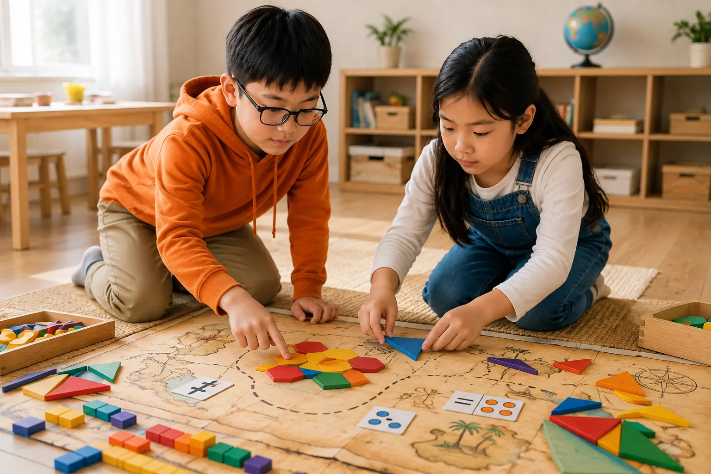

數學理財 × 桌遊
讓孩子學習富人的理財思維：從存錢開始，練習把金錢分配到不同的錢包，理解消費、儲蓄、捐獻與投資的選擇。透過桌遊與實際操作，觀察財富如何累積，培養規畫金錢與思考價值的能力。
SUMMER MATH CAMP
每一年的暑假，我們都會精心設計不同的生活數學主題，讓孩子發現數學可以非常有趣、貼近生活；它不再只是遙不可及、枯燥乏味的計算。每年的課程設計都會隨主題更新，帶來新的觀察與挑戰。
LINE 課程諮詢 ↗
CAMP THEMES
讓孩子學習富人的理財思維：從存錢開始，練習把金錢分配到不同的錢包，理解消費、儲蓄、捐獻與投資的選擇。透過桌遊與實際操作，觀察財富如何累積，培養規畫金錢與思考價值的能力。
從大家熟悉的夜市飲食與遊戲攤位出發，體驗活動如何設計、食物如何製作，也一起思考攤販經營的方式與成本概念，讓孩子更了解這個行業背後的內容與思維。
CAMP MOMENTS
左右滑動瀏覽照片；點選任一張圖片可放大查看。